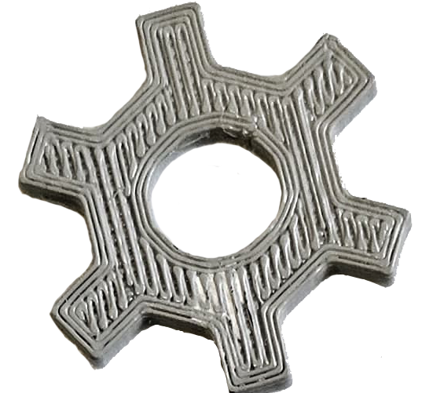

Projeto Analógico · RPG de Mesa
Os Tripulantes de Ofélia

Os Tripulantes de Ofélia é um RPG de mundo aberto analógico que envolve exploração de mapa, cartas de eventos e personagens, e um sistema de engrenagens como moeda de troca. Atuei como game designer, organizando regras, desafios e ideias, prototipando, projetando e testando o jogo.
Sobre o projeto
Os Tripulantes de Ofélia é um RPG de mesa de mundo aberto. A exploração de um mapa, cartas de eventos que trazem variedade e aleatoriedade, e cartas de personagens definem a experiência, com um sistema próprio de moeda baseado em engrenagens.
Destaques
- Exploração de mapa em mundo aberto
- Cartas de eventos e de personagens
- Sistema de engrenagens como moeda de troca